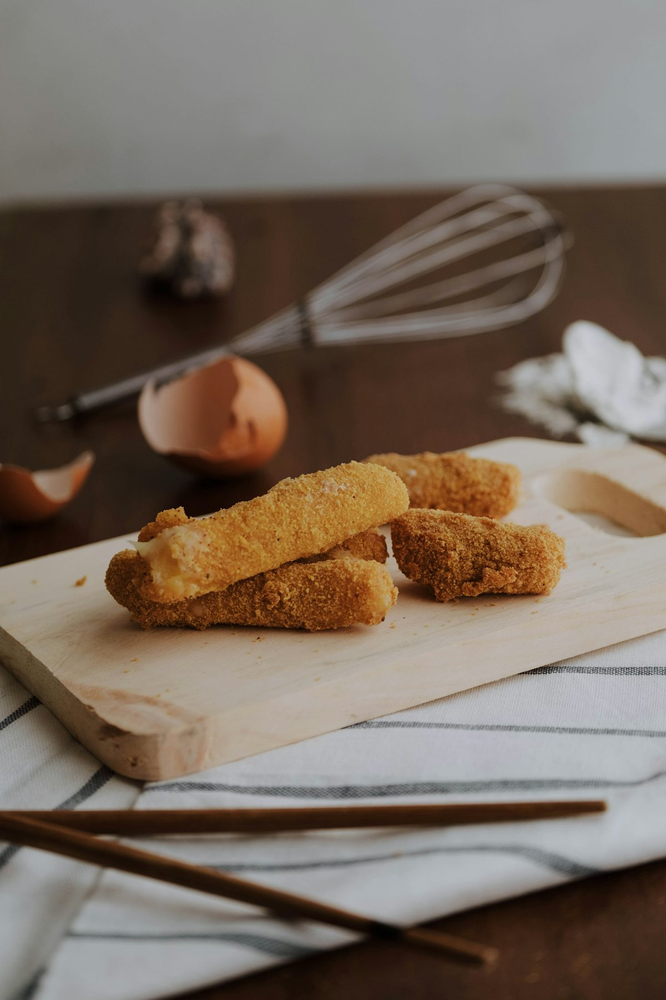
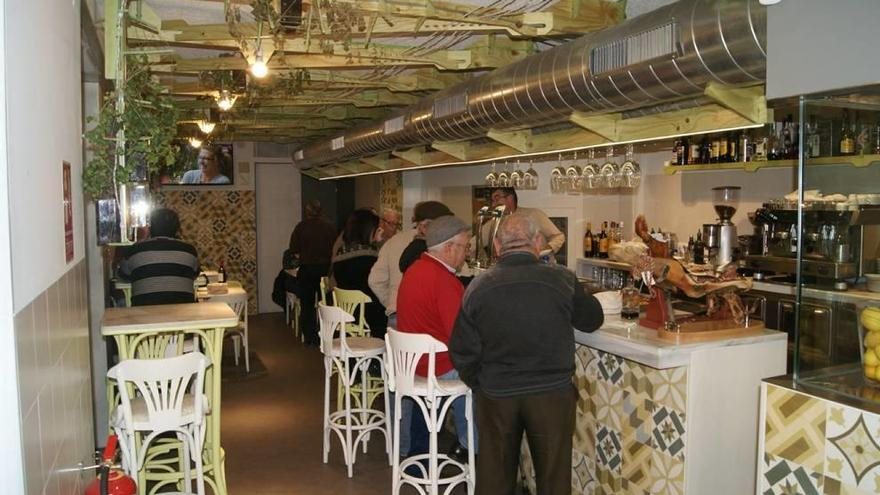

AperitivosCroqueta de chipirón
“La croqueta de chipirón y el pulpo a la plancha muy buenos.”
Precio: ver en carta
Bar-restaurante en La Ñora, Murcia · Cocina mediterránea con personalidad
Tapas y cocina mediterránea en La Ñora, con un local cuidado y un servicio rápido. Ideal para tapear, cenar o venir en familia. Si vienes, lo normal es que repitas.

Las Rajicas
En La Ñora, con cocina mediterránea y ese punto de casa que apetece repetir: buen producto, platos reconocibles y un ambiente cuidado.
Aquí se viene a lo importante: comer rico y estar a gusto. Tapas para compartir, platos de cocina y un servicio que recomienda sin marear.
Si te apetece un sitio bonito y fiable para una cena tranquila o un tapeo con amigos, aquí lo tienes.
Producto sin atajos
Selección diaria y respeto máximo al sabor.
Ambiente cuidado
Luz cálida, detalles limpios y mesas cómodas.
Servicio cercano
Recomendaciones claras, trato humano y profesional.
Carta
En algunos móviles el visor puede tardar. Si te va mejor, descárgala o ábrela online.
Recomendados
Selección basada en lo que más se menciona en reseñas: pulpo, croquetas, hamburguesa, pluma y postres.
Prueba social
Buen ambiente, tapas de calidad y servicio cercano: eso es lo que más se repite.
Reseñas
★★★★★
“Todo excelente: comida, servicio y ambiente. Recomendable si quieres tapear bien en La Ñora.”
Reseñas
★★★★★
“Servicio rápido y muy buena relación calidad‑precio. El pulpo y las croquetas, de lo mejor.”
Reserva ahora y ven a disfrutar de una cocina mediterránea cuidada en La Ñora. Te atendemos rápido por teléfono.
Contacto
Para reservas, lo más rápido es teléfono. Si necesitas información, te atendemos encantados.
Nuestra ubicación en Google Maps.